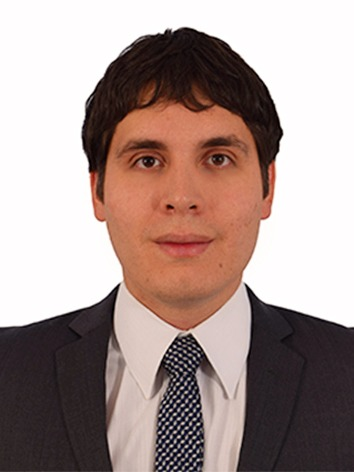

CURRICULUM VITAE YERSON ARBOLEDA CORREA
DATOS PERSONALES
- Nombre Completo: Yerson Arboleda Correa
- Fecha de Nacimiento: 24/08/1989
- Lugar de Nacimiento: Medellin
FORMACIÓN ACADÉMICA
- 2008-2013: Universidad Nacional de Colombia
- Ingeniero de Petroleos
- 2000-2006 Intituto Tecnico Industrial Pascual Bravo
- Bachiller Tecnico Industrial en Electricidad y Electronica
EXPERIENCIA LABORAL
- 2017-2021: Ingeniero de Subsuelo Aprendiz
- Participar en las operaciones de workover y well service,especialmente de bombeo electro sumergible, cañoneo,
aislamiento de zonas de agua y fractura hidráulica.
- 2015-2017: Caz
- Atrapé a gatubela a joker a Victor fries lo deje porque se me congeló la capa
- 2013-2014:Ingeniero Aprediz
- Organización y control de calidad de las operaciones de vaciado de concreto en el puente varodd brua.